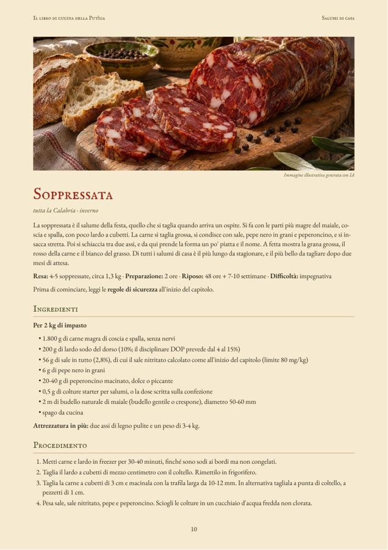
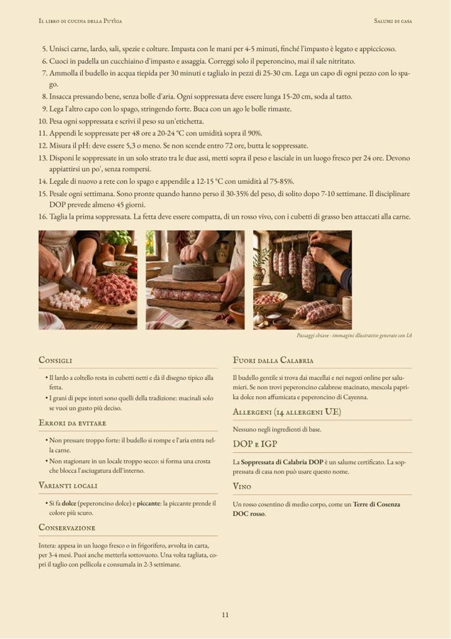
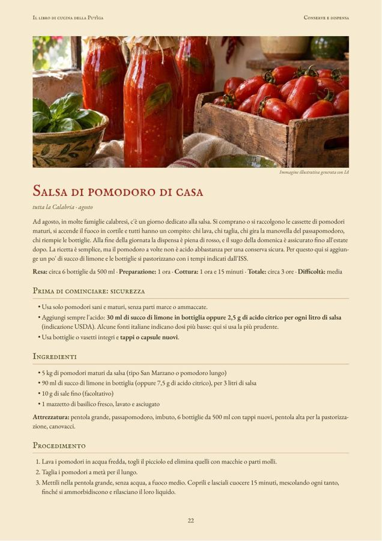
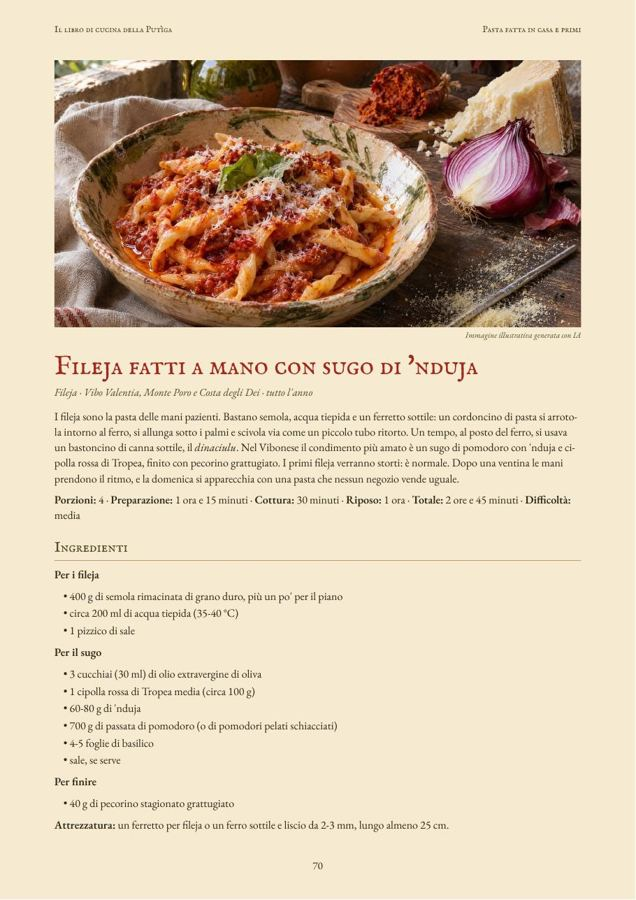
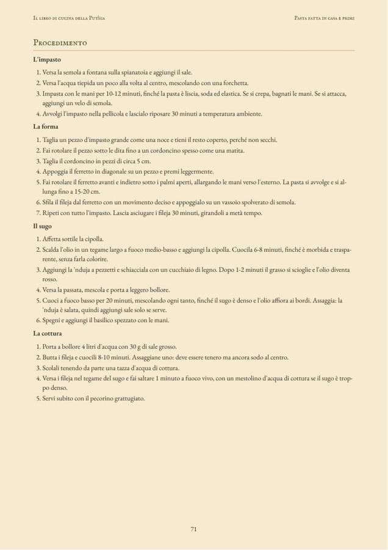
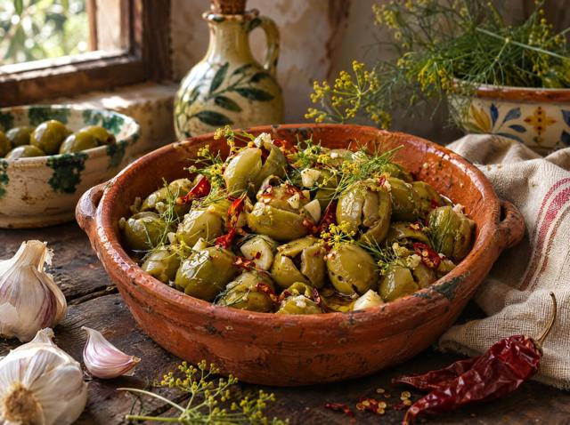
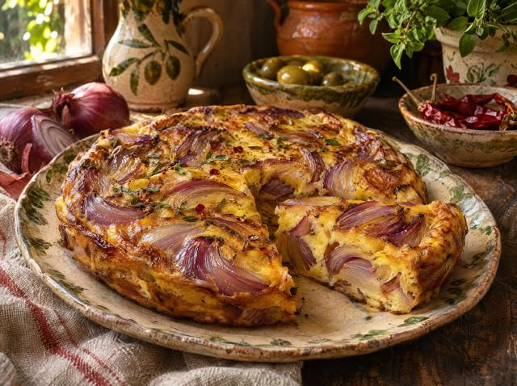
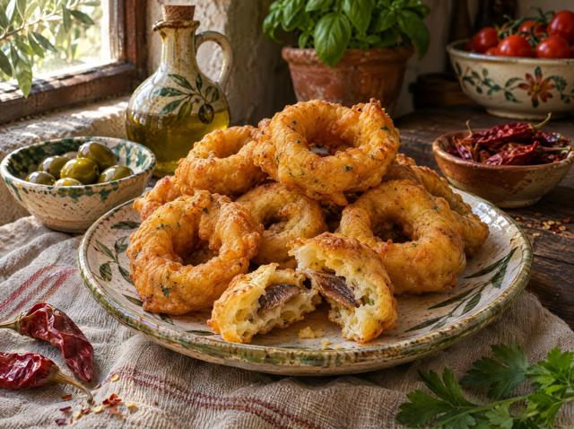
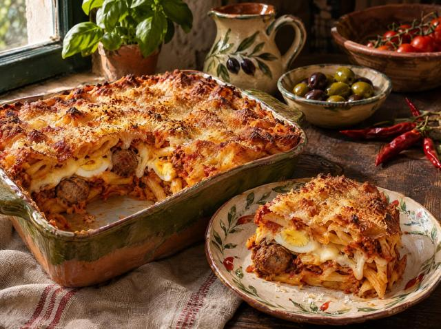
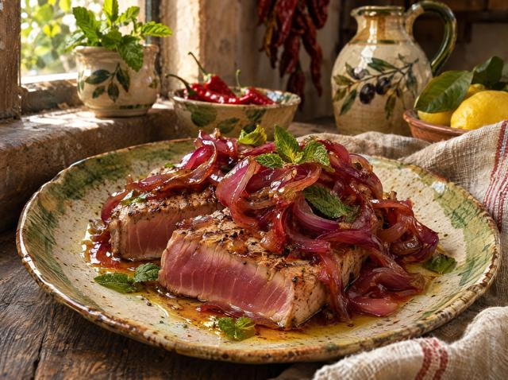

I sapori di casa, anche lontano da casa.
Il libro di cucina della Putìga
60 ricette calabresi di casa, dai salumi ai dolci delle feste
La cucina di casa calabrese spiegata passo per passo: dai giorni del maiale alle conserve di fine estate, dalla pasta tirata a mano ai dolci di Natale e di Pasqua.
✓ File che non si apre o non arriva? Lo sistemiamo o ti rimborsiamo.
- 60ricette
- 9capitoli
- 148pagine A4
- 241illustrazioni


Cosa trovi dentro
Ricette che riescono al primo colpo
Dosi in grammi, passaggi numerati con un'azione alla volta e i segni da guardare: colore, profumo, consistenza, temperatura.
Salumi e conserve in sicurezza
Le conserve seguono le linee guida dell'Istituto Superiore di Sanità. I salumi spiegano sale nitritato, pH e calo di peso. I metodi di una volta non più sicuri sono raccontati come storia.
Tutto quello che serve intorno
Per ogni ricetta: consigli, errori da evitare, varianti, conservazione, sostituzioni per chi vive fuori dalla Calabria, allergeni UE, prodotti DOP e IGP, un vino DOC calabrese.
Glossario e indici
Indice cliccabile, glossario dei nomi in dialetto, tabella delle conversioni e indice per ingredienti.
Sfoglialo
Tocca la pagina di destra per girarla.






60 ricette in 9 capitoli
 Salumi di casa6
Salumi di casa6
- Salsiccia fresca e secca
- Soppressata
- Capocollo
- Pancetta tesa e arrotolata
- 'Nduja
- Ciccioli e strutto

Conserve e dispensa10
- Salsa di pomodoro di casa
- Pomodori secchi sott'olio
- Melanzane sott'olio
- Peperoncini ripieni sott'olio
- Peperoncino essiccato, in polvere e in olio
- Olive schiacciate
- Olive nere al forno
- Funghi sott'olio
- Sardella: la storia e la versione di oggi
- Miele di fichi

Antipasti e piatti di casa6
- Polpette di melanzane
- Polpette di pane
- Ricotta di casa (formaggio fresco al limone)
- Frittata con la cipolla rossa di Tropea
- Pitticelle di fiori di zucca
- Peperoni e uova

Pane e lievitati6
- Pane di casa di grano duro
- Pitta catanzarese
- Pane di patate
- Cuddrurieddri
- Zeppole con le alici
- Frese (friselle) con pomodoro e origano

Pasta fatta in casa e primi10
- Fileja fatti a mano con sugo di 'nduja
- Maccheroni al ferretto con ragù della domenica
- Struncatura con alici e mollica: storia e versione di oggi
- Lagane e ceci
- Millecosedde
- Pasta china (pasta al forno della festa)
- Pasta e fagioli con le cotiche
- Pasta e patate alla tiella
- Pasta con pomodori secchi, olive e mollica
- Licurdia (zuppa di cipolle e pane)
 Secondi di carne6
Secondi di carne6
- Morzello alla catanzarese
- Capra in umido con vino e pomodoro
- Frittole
- Salsiccia con patate e peperoni al forno
- Vrasciole (polpette allungate)
- Agnello con piselli di Pasqua

Secondi di pesce5
- Pesce spada alla bagnarota
- Stocco alla mammolese
- Tonno in agrodolce con le cipolle
- Alici arriganate
- Baccalà con patate e olive
 Contorni5
Contorni5
- Pipi e patate
- Patate 'mpacchiuse
- Ciambotta
- Parmigiana di melanzane alla calabrese
- Peperoni ripieni di mollica
 Dolci delle feste6
Dolci delle feste6
- Pitta 'mpigliata
- Petrali
- Cuzzupa di Pasqua
- Mostaccioli di Soriano
- Turdilli al miele di fichi
- Giurgiulena (croccante di sesamo e miele)
Prima di comprarlo, assaggialo
Scarica gratis la ricetta dei fileja con sugo di 'nduja, impaginata come nel libro. Niente email, niente iscrizioni.
Scarica gratis una ricetta ↓Per chi è
Per chi è nato in Calabria e vive lontano. Per chi ha nonni calabresi e vuole rifare i piatti di casa. Per chi ama la cucina regionale italiana e vuole ricette precise, senza scorciatoie e senza segreti inventati.
Il libro completo
12,90 €
- PDF a colori, 148 pagine
- Leggibile su telefono, tablet e computer
- Stampabile in A4 per uso personale
- Download subito dopo il pagamento
✓ File che non si apre o non arriva? Lo sistemiamo o ti rimborsiamo.
Pagamento sicuro sulla piattaforma di vendita.
Domande frequenti
Come ricevo il libro?
Dopo il pagamento ricevi un link per scaricare il PDF, anche via email. Puoi leggerlo su computer, tablet e telefono.
Posso stamparlo?
Sì, è impaginato in formato A4, per uso personale.
Le foto sono vere?
No. Le immagini sono illustrazioni generate con l'intelligenza artificiale, e ognuna lo dice nella didascalia. I testi e le ricette sono scritti per questo libro.
C'è anche in inglese?
Sì, esiste un'edizione inglese separata, con le misure americane (oz, cups, °F) accanto a quelle metriche.
Posso chiedere il rimborso?
Se il file non si apre o non arriva, lo sistemiamo o ti rimborsiamo. Per il resto, per i contenuti digitali scaricati subito il diritto di recesso non si applica, come previsto dal Codice del Consumo. I dettagli sono nelle condizioni di vendita.